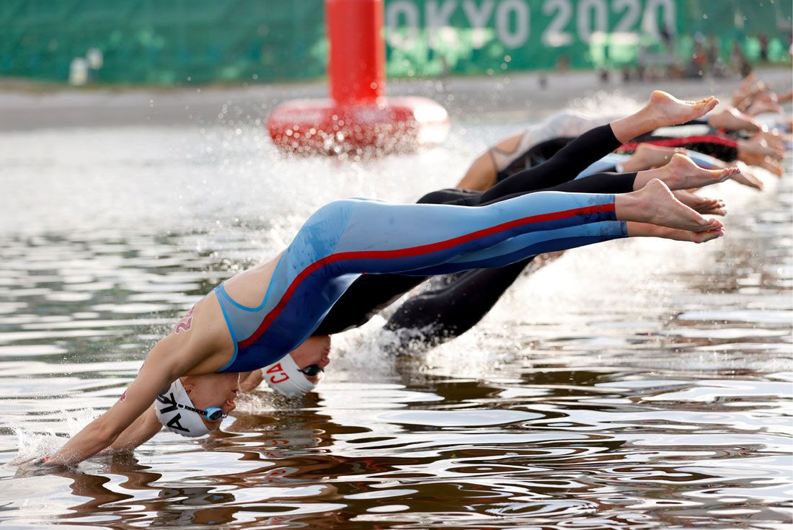

Cecilia Biagioli finalizó la maratón acuática de 10 km en un tiempo de 2:01.31 a tan solo 2 minutos de la ganadora de la competencia, la nadadora brasileña Cunha.
Con este resultado, quedó clasificada en el puesto 12° mejorando la ubicación respecto a Río 2016 que habia sido 16°.
"Fue una carrera durísima, por la temperatura del agua, fue bastante fuerte", menció al finalizar la prueba.Con mucho esfuerzo y sacrificio, Cecilia pudo representar por quinta vez a la Argentina en un Juego Olímpico. Anteriormente, había participado de Sydney 2000, Atenas 2004, Beijing 2008, Londres 2012 y Río 2016.
Felicitaciones Cecilia!!
